Turkiye student Evaluation Dataset
Unsupervised learning problem
Contents
Data Preprocessing
X = readtable('turkiye-student-evaluation_generic.csv'); % Check Missing values sum(ismissing(X)) % there are no missing values in any column of this dataset. % No need of data preprocessing % All Attributes are numeric % The nb.repeat is the target column of this dataset. It takes 3 values % 1,2,and 3.
ans =
Columns 1 through 13
0 0 0 0 0 0 0 0 0 0 0 0 0
Columns 14 through 26
0 0 0 0 0 0 0 0 0 0 0 0 0
Columns 27 through 33
0 0 0 0 0 0 0
% Target variable distribution tabulate(X.nb_repeat) % Split train and target data Y=X.nb_repeat; X.nb_repeat=[];
Value Count Percent
1 4909 84.35%
2 576 9.90%
3 335 5.76%
Exploratory Data Analysis
for k=1:10 colData = X.(k); figure(k) histogram(colData); xlabel(X.Properties.VariableNames(k)); ylabel('Count'); end figure(11) histogram(Y); xlabel('nbRepeat'); ylabel('Count');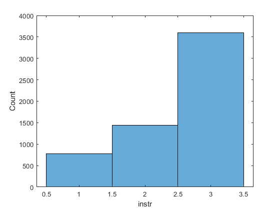 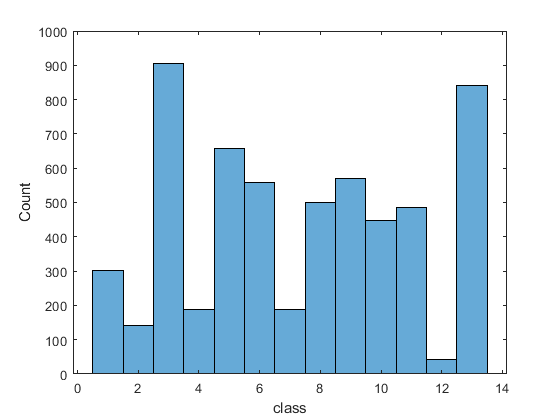 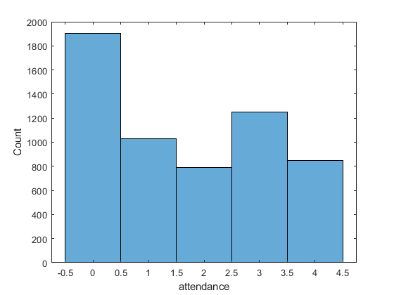 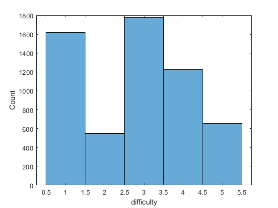 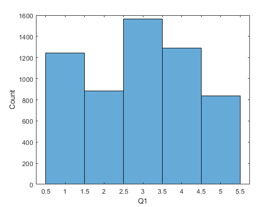 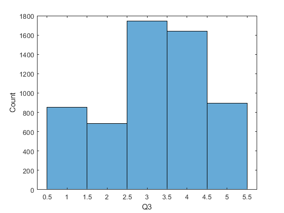 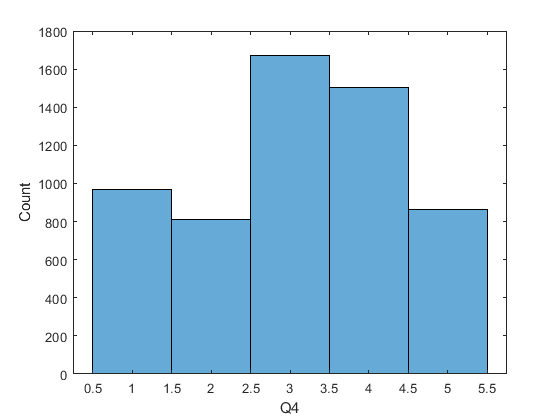 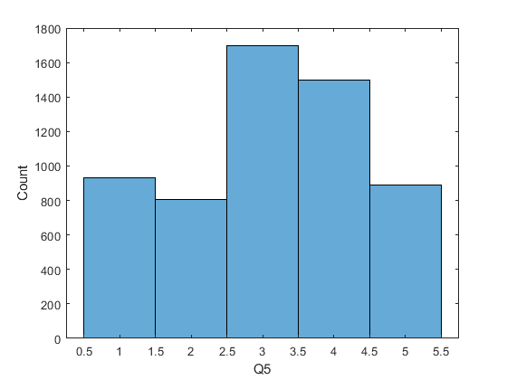 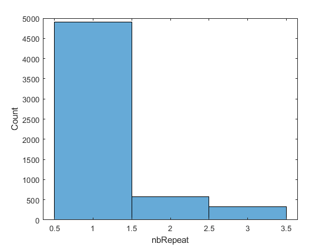
Models with all data
rng('default') % For reproducibility % Models % Naive Bayes % K-nearest Neighbor % Logistic Regression % Decision Trees % Random Forest % Multi-Layer Perceptron
Naive Bayes
Md1 = fitcnb(X,Y); L1 = loss(Md1,X,Y); AccuracyNB = 1-L1
AccuracyNB =
0.6732
KNN
Md2 = fitcknn(X,Y,'NumNeighbors',4);
L2 = loss(Md2,X,Y);
AccuracyKNN = 1-L2
AccuracyKNN =
0.8625
Logistic Regression
[A,~] = mnrfit(table2array(X),Y); yhat = mnrval(A,table2array(X)); [~,B]=max(yhat'); CP = classperf(Y,B')
Label: ''
Description: ''
ClassLabels: [3×1 double]
GroundTruth: [5820×1 double]
NumberOfObservations: 5820
ControlClasses: [2×1 double]
TargetClasses: 1
ValidationCounter: 1
SampleDistribution: [5820×1 double]
ErrorDistribution: [5820×1 double]
SampleDistributionByClass: [3×1 double]
ErrorDistributionByClass: [3×1 double]
CountingMatrix: [4×3 double]
CorrectRate: 0.8433
ErrorRate: 0.1567
LastCorrectRate: 0.8433
LastErrorRate: 0.1567
InconclusiveRate: 0
ClassifiedRate: 1
Sensitivity: 0.9990
Specificity: 0.0055
PositivePredictiveValue: 0.8441
NegativePredictiveValue: 0.5000
PositiveLikelihood: 1.0045
NegativeLikelihood: 0.1856
Prevalence: 0.8435
DiagnosticTable: [2×2 double]
Random Forest
B = TreeBagger(50,X,Y,'OOBVarImp','On') figure plot(oobError(B)) xlabel('Number of Grown Trees') ylabel('Out-of-Bag Classification Error') mean(oobError(B))
B =
TreeBagger
Ensemble with 50 bagged decision trees:
Training X: [5820x32]
Training Y: [5820x1]
Method: classification
NumPredictors: 32
NumPredictorsToSample: 6
MinLeafSize: 1
InBagFraction: 1
SampleWithReplacement: 1
ComputeOOBPrediction: 1
ComputeOOBPredictorImportance: 1
Proximity: []
ClassNames: '1' '2' '3'
ans =
0.1644
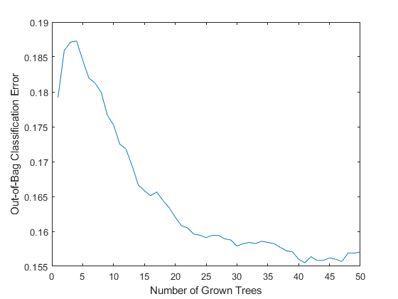 Decision Tree
Md3 = fitctree(X,Y,'MaxNumSplits',7,'CrossVal','on'); view(Md3.Trained{1},'Mode','graph') numBranches = @(x)sum(x.IsBranch); mdlDefaultNumSplits = cellfun(numBranches, Md3.Trained); figure; histogram(mdlDefaultNumSplits) Error3 = kfoldLoss(Md3); AccuracyDT=1-Error3
AccuracyDT =
0.8435
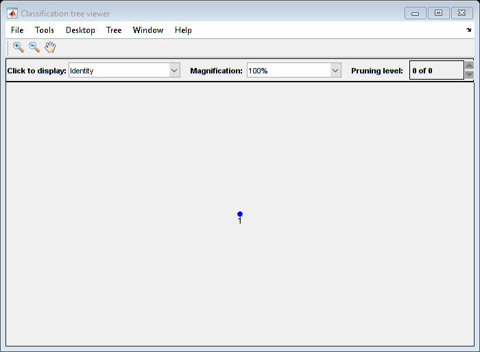 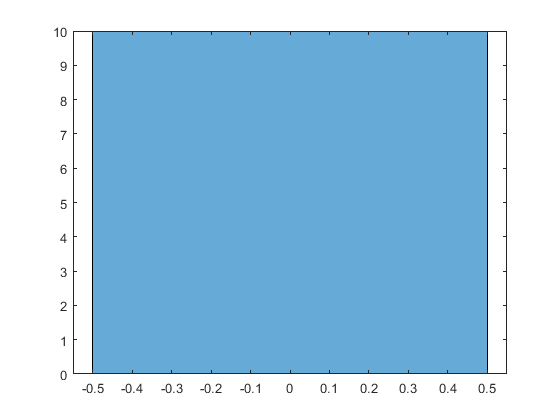 Neural Network
x = table2array(X)'; t = full(ind2vec(Y')); trainFcn = 'trainscg'; % Scaled conjugate gradient backpropagation. hiddenLayerSize = 10; net = patternnet(hiddenLayerSize, trainFcn); net.input.processFcns = {'removeconstantrows','mapminmax'}; net.divideFcn = 'dividerand'; % Divide data randomly net.divideMode = 'sample'; % Divide up every sample net.divideParam.trainRatio = 70/100; net.divideParam.valRatio = 15/100; net.divideParam.testRatio = 15/100; net.performFcn = 'crossentropy'; % Cross-Entropy net.plotFcns = {'plotperform','plottrainstate','ploterrhist', ... 'plotconfusion', 'plotroc'}; % Train the Network [net,tr] = train(net,x,t); % Test the Network y = net(x); e = gsubtract(t,y); performance = perform(net,t,y) % View the Network % view(net) % Plots figure, plotperform(tr) figure, plottrainstate(tr) figure, ploterrhist(e) figure, plotconfusion(t,y) figure, plotroc(t,y)
performance =
0.1685
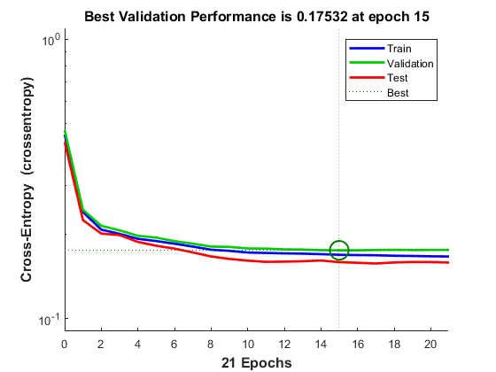 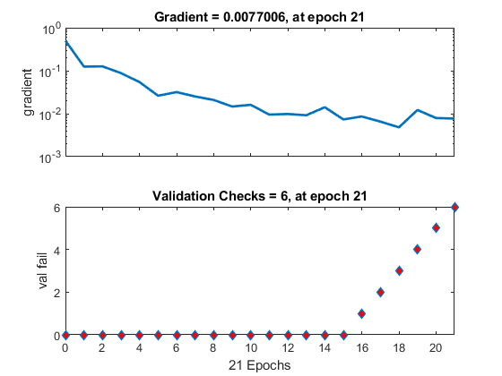 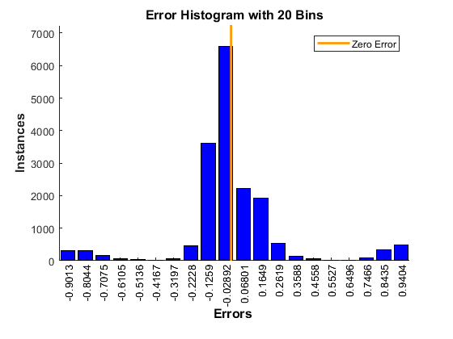 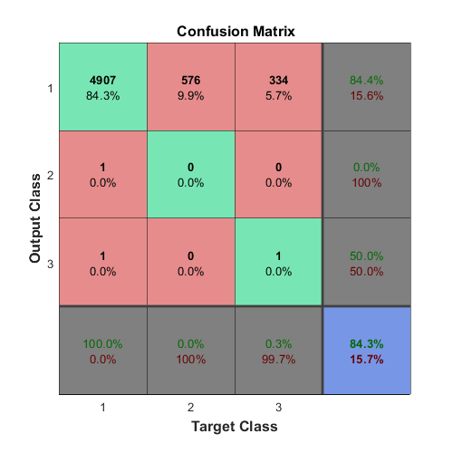 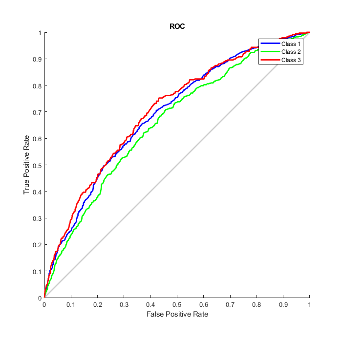 Variables Distribution
variables=X.Properties.VariableNames; %get variable names tot=zeros(5,1); for k=6:length(variables) colData = X.(k); temp=tabulate(colData); tot = tot + temp(:,3); end tot=tot/(length(variables)-6) % Looks like all variables have similar distribution
tot = 15.6483 12.1722 29.8639 28.5375 17.6242
Models after removing question columns
Lets remove unnecessary question columns as they have same distribution
% Models % Naive Bayes % K-nearest Neighbor % Logistic Regression % Decision Trees % Random Forest % Multi-Layer Perceptron
Naive Bayes
mod_dat = X(:,1:4); Md4 = fitcnb(mod_dat,Y); L4 = loss(Md4,mod_dat,Y); AccuracyNB=1-L4
AccuracyNB =
0.8435
KNN
mod_dat = X(:,1:4);
Md5 = fitcknn(mod_dat,Y,'NumNeighbors',4);
L5 = loss(Md5,mod_dat,Y);
AccuracyKNN=1-L5
AccuracyKNN =
0.8206
Logistic Regression
[A,dev,stats] = mnrfit(table2array(mod_dat),Y); yhat = mnrval(A,table2array(mod_dat)); [~,B]=max(yhat'); CP = classperf(Y,B')
Label: ''
Description: ''
ClassLabels: [3×1 double]
GroundTruth: [5820×1 double]
NumberOfObservations: 5820
ControlClasses: [2×1 double]
TargetClasses: 1
ValidationCounter: 1
SampleDistribution: [5820×1 double]
ErrorDistribution: [5820×1 double]
SampleDistributionByClass: [3×1 double]
ErrorDistributionByClass: [3×1 double]
CountingMatrix: [4×3 double]
CorrectRate: 0.8435
ErrorRate: 0.1565
LastCorrectRate: 0.8435
LastErrorRate: 0.1565
InconclusiveRate: 0
ClassifiedRate: 1
Sensitivity: 1
Specificity: 0
PositivePredictiveValue: 0.8435
NegativePredictiveValue: NaN
PositiveLikelihood: 1
NegativeLikelihood: NaN
Prevalence: 0.8435
DiagnosticTable: [2×2 double]
Decision Tree
Md6 = fitctree(mod_dat,Y,'MaxNumSplits',7,'CrossVal','on'); view(Md6.Trained{1},'Mode','graph'); numBranches = @(x)sum(x.IsBranch); mdlDefaultNumSplits = cellfun(numBranches, Md6.Trained); figure; histogram(mdlDefaultNumSplits); Error6 = kfoldLoss(Md6); AccuracyDT=1-Error6
AccuracyDT =
0.8435
Random Forest
B = TreeBagger(50,mod_dat,Y,'OOBVarImp','On'); figure plot(oobError(B)) xlabel('Number of Grown Trees'); ylabel('Out-of-Bag Classification Error'); mean(oobError(B))
ans =
0.1581
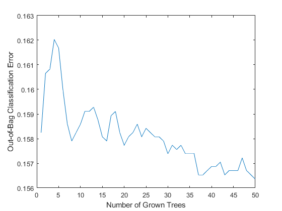 Neural Network
x = table2array(mod_dat)'; t = full(ind2vec(Y')); trainFcn = 'trainscg'; % Scaled conjugate gradient backpropagation. hiddenLayerSize = 10; net = patternnet(hiddenLayerSize, trainFcn); net.input.processFcns = {'removeconstantrows','mapminmax'}; net.divideFcn = 'dividerand'; % Divide data randomly net.divideMode = 'sample'; % Divide up every sample net.divideParam.trainRatio = 70/100; net.divideParam.valRatio = 15/100; net.divideParam.testRatio = 15/100; net.performFcn = 'crossentropy'; % Cross-Entropy net.plotFcns = {'plotperform','plottrainstate','ploterrhist', ... 'plotconfusion', 'plotroc'}; % Train the Network [net,tr] = train(net,x,t); % Test the Network y = net(x); e = gsubtract(t,y); performance = perform(net,t,y) % View the Network % view(net) % Plots figure, plotperform(tr) figure, plottrainstate(tr) figure, ploterrhist(e) figure, plotconfusion(t,y) figure, plotroc(t,y)
performance =
0.1595
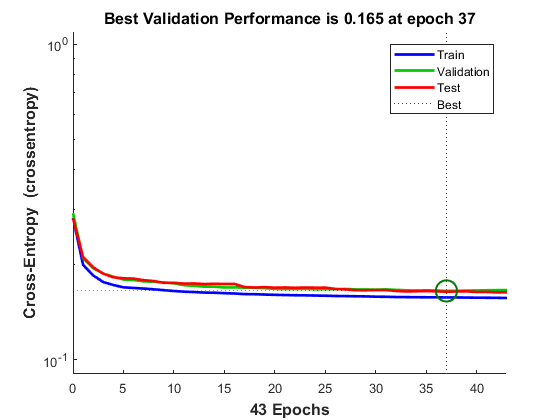 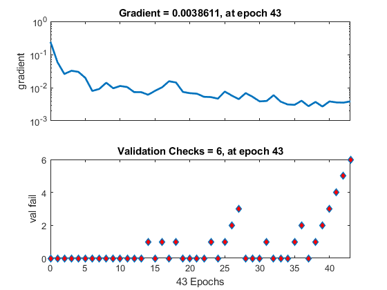 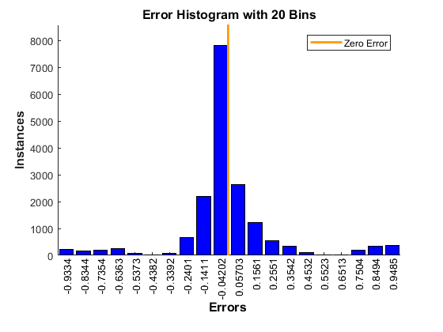 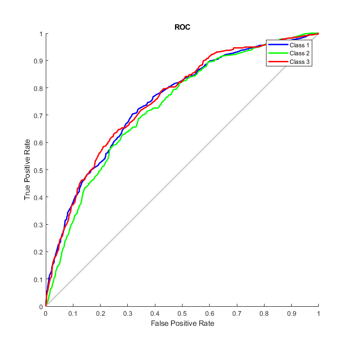